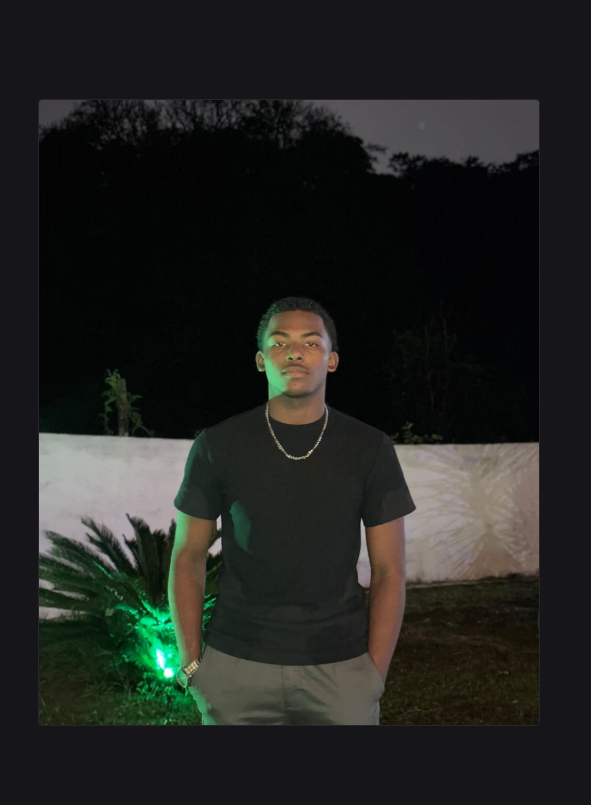

A Trafe King. ainda não foi lançada.
A TRAFE KING. NASCEU DE UMA IDEIA SIMPLES.
Ninguém deveria precisar aprender marketing completamente sozinho.
A Trafe King. está sendo construída para aproximar pessoas que possuem dúvidas de pessoas dispostas a compartilhar aquilo que já aprenderam.
DE UMA DÚVIDA PARA UMA COMUNIDADE.
A ideia surgiu observando algo comum no marketing: existe muito conteúdo disponível, mas muitas pessoas ainda têm dificuldade para encontrar uma resposta que considere a situação específica delas.
Nem sempre falta informação. Às vezes falta conversa. Às vezes falta experiência compartilhada. Às vezes falta conhecer a pessoa certa.
A Trafe King. nasceu dessa percepção.
QUEM SABE, AJUDA.
QUEM ESTÁ COMEÇANDO, PERGUNTA.
TODO MUNDO EVOLUI.
CONHECIMENTO APROXIMA. CONEXÕES CONSTROEM.
A visão da Trafe King. também envolve criar conexões profissionais. Pessoas poderão futuramente encontrar profissionais, parceiros, colaboradores e pessoas com habilidades complementares.
Isso não é uma promessa de emprego, de cliente ou de sociedade. É uma direção: conexões a partir do que cada pessoa faz, aprende e constrói.

QUEM ESTÁ CONSTRUINDO A TRAFE KING.
Samuel é o fundador da Trafe King. e conduz o desenvolvimento inicial do projeto.
A ideia nasceu a partir do interesse por marketing, tráfego pago, tecnologia e construção de projetos digitais.
A visão é transformar a Trafe King. em uma comunidade onde conhecimento, prática e conexões possam circular entre pessoas com diferentes níveis de experiência.
COMEÇAMOS AQUI. MAS NÃO PRECISAMOS PARAR AQUI.
A primeira comunidade será construída para o público brasileiro.
Com o crescimento do projeto, a Trafe King. poderá futuramente receber novos idiomas e pessoas de outros países. Essa é uma visão de longo prazo. A operação ainda não é internacional.